BẢN CHẤT VÀ CHỨC NĂNG CỦA NHÀ NƯỚC XÃ HỘI CHỦ NGHĨA
Vì sao Nhà nước XHCN là kiểu nhà nước mới, khác về chất so với các kiểu nhà nước bóc lột trong lịch sử?
Môn học: Chủ nghĩa xã hội khoa học – Nhóm thực hiện: Nhóm 4.Giảng viên: Phạm Thị Minh Nguyệt
Vì sao Nhà nước XHCN là kiểu nhà nước mới, khác về chất so với các kiểu nhà nước bóc lột trong lịch sử?
"Mọi nhà nước trong lịch sử đều mang tính giai cấp và dùng bạo lực trấn áp, vậy Nhà nước XHCN 'mới' và 'khác biệt về chất' ở điểm nào?"
Nguồn gốc & Khái niệm: Tiền đề ra đời và thuộc tính "nửa nhà nước".
Bản chất toàn diện: Chính trị – Kinh tế – Văn hóa, tư tưởng & xã hội.
Mắt xích bản chất: Mối quan hệ giữa Dân chủ XHCN và Nhà nước XHCN.
Đối chiếu lịch sử: Bảng so sánh 7 tiêu chí với các nhà nước bóc lột.
Hệ thống chức năng: Quan hệ biện chứng giữa trấn áp và tổ chức – xây dựng.
Vận dụng thực tiễn: 6 đặc trưng của Nhà nước pháp quyền XHCN Việt Nam.
Đập tan bộ máy nhà nước tư sản qua cách mạng vô sản, xác lập chính quyền của giai cấp công nhân và nhân dân lao động.
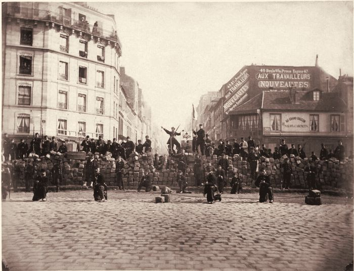
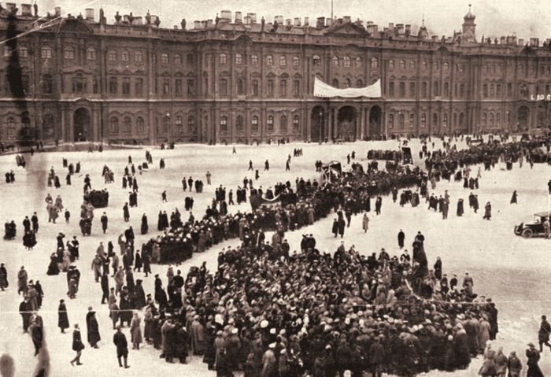
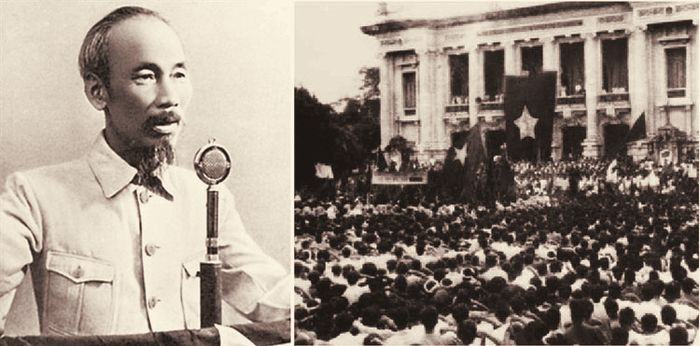
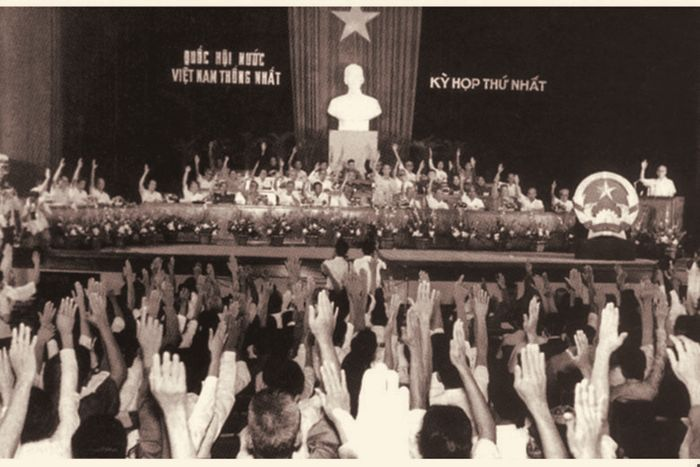
Định nghĩa:"Nhà nước XHCN là nhà nước mà ở đó, sự thống trị chính trị thuộc về giai cấp công nhân, do cách mạng XHCN sản sinh ra và có sứ mệnh xây dựng thành công CNXH, đưa nhân dân lao động lên địa vị làm chủ trên tất cả các mặt của đời sống xã hội trong một xã hội phát triển cao – xã hội XHCN".
Về đối tượng thống trị: Không còn là công cụ của thiểu số áp bức đa số, mà là sự chuyên chính của tuyệt đại đa số nhân dân đối với thiểu số bóc lột.
Về cơ chế vận hành: Vừa là bộ máy hành chính – cưỡng chế, vừa là tổ chức quản lý kinh tế – xã hội của chính nhân dân lao động.
Về quy luật phát triển: Sứ mệnh của nó là tự tiêu vong khi cơ sở giai cấp không còn trong giai đoạn cộng sản chủ nghĩa hoàn thiện.
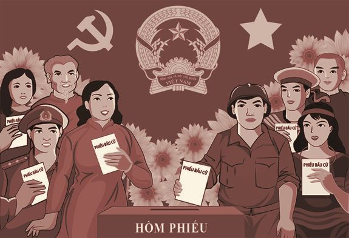
Mang bản chất giai cấp công nhân: Lợi ích của giai cấp công nhân thống nhất với lợi ích chung của toàn thể nhân dân lao động.
Đại biểu cho quyền lực và ý chí nhân dân: Lần đầu tiên trong lịch sử, toàn bộ quyền lực nhà nước thực sự thuộc về quảng đại quần chúng lao động.
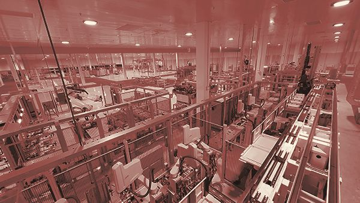
Dựa trên chế độ sở hữu xã hội (công hữu) về tư liệu sản xuất chủ yếu.
Không còn quan hệ bóc lột thống trị; thiết lập cơ chế phân phối theo lao động là chủ đạo.
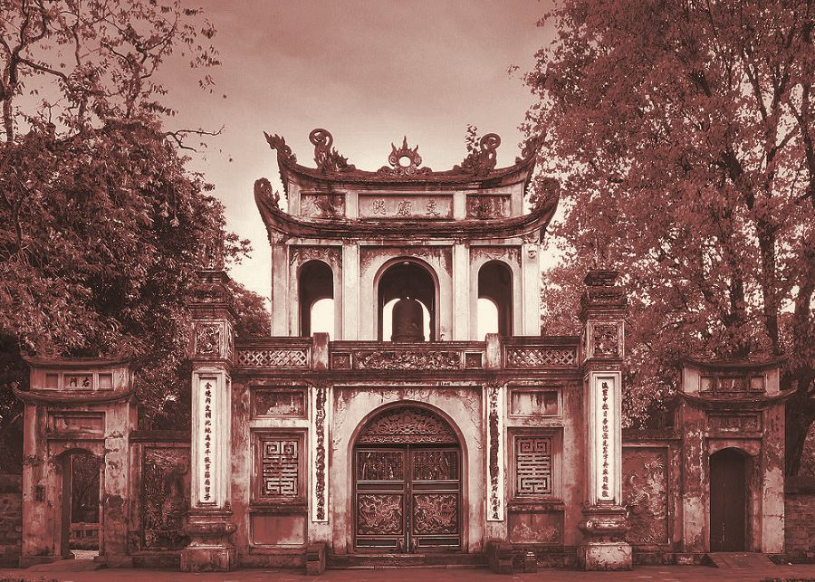
Lấy hệ tư tưởng Mác – Lênin làm nền tảng tinh thần chủ đạo trong toàn bộ đời sống xã hội.
Kế thừa tinh hoa văn hóa nhân loại song hành cùng giữ gìn và phát huy bản sắc văn hóa dân tộc.
Hình thành con người mới XHCN với lối sống nhân văn, tiến bộ, công bằng và bình đẳng.
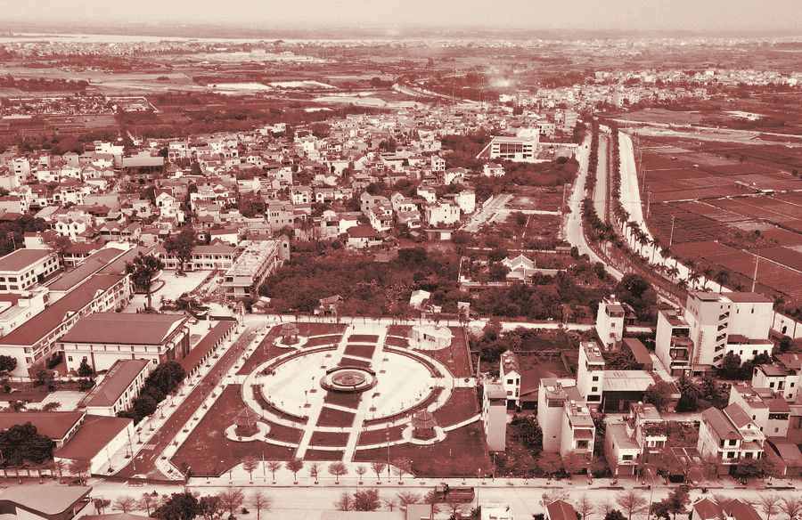
Từng bước thu hẹp khoảng cách giữa các giai cấp, tầng lớp, giữa nông thôn – thành thị, giữa lao động trí óc – lao động chân tay.
Bảo đảm mọi công dân đều bình đẳng trong tiếp cận các nguồn lực và cơ hội phát triển toàn diện.
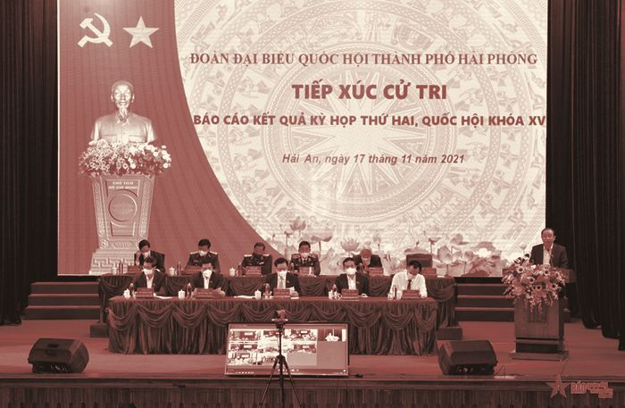
| Tiêu chí so sánh | Nhà nước bóc lột (Chủ nô, Phong kiến, Tư sản) | Nhà nước Xã hội Chủ nghĩa |
|---|---|---|
| Cơ sở kinh tế | Chế độ chiếm hữu tư nhân về TLSX. | Chế độ sở hữu xã hội (công hữu) về TLSX chủ yếu. |
| Giai cấp cầm quyền | Giai cấp bóc lột (Chủ nô, địa chủ, tư sản) – Thiểu số. | Giai cấp công nhân và nhân dân lao động – Tuyệt đại đa số. |
| Mục đích quyền lực | Duy trì trật tự bóc lột, bảo vệ đặc quyền thống trị. | Xóa bỏ áp bức, bóc lột; giải phóng con người toàn diện. |
| Chức năng chủ yếu | Trấn áp, cưỡng chế đối với đa số nhân dân lao động. | Tổ chức và xây dựng toàn diện xã hội mới. |
| Cơ sở xã hội | Rất hẹp (chỉ giới hạn trong giai cấp bóc lột). | Rất rộng: Liên minh Công nhân – Nông dân – Trí thức. |
| Hệ tư tưởng chủ đạo | Hệ tư tưởng của giai cấp thống trị bóc lột. | Chủ nghĩa Mác – Lênin. |
| Xu hướng vận động | Củng cố bộ máy, tìm cách duy trì vĩnh viễn sự thống trị; chỉ bị thay thế qua cách mạng xã hội. | Từng bước thu hẹp chức năng chính trị và tự tiêu vong khi giai cấp không còn. |
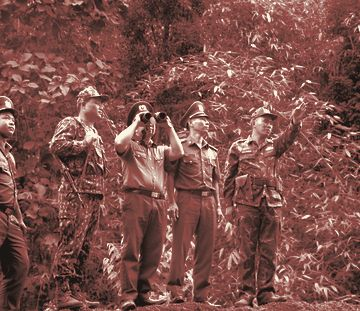
Đối nội: Quản lý kinh tế, duy trì an ninh chính trị, phát triển văn hóa, giáo dục, an sinh xã hội.
Đối ngoại: Bảo vệ độc lập chủ quyền, mở rộng hợp tác hữu nghị quốc tế, hội nhập toàn cầu.
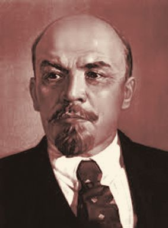
V.I. Lênin khẳng định: "Bất cứ một nhà nước nào cũng đều có nghĩa là dùng bạo lực; nhưng toàn bộ sự khác nhau là ở chỗ dùng bạo lực đối với những người bị bóc lột hay đối với kẻ đi bóc lột".
V.I. Lênin nhấn mạnh: Chuyên chính vô sản "không phải chỉ là bạo lực đối với bọn bóc lột, và cũng không phải chủ yếu là bạo lực... mà cái bảo đảm sức sống và thắng lợi của nó chính là việc giai cấp vô sản đưa ra được và thực hiện được kiểu tổ chức lao động xã hội cao hơn so với CNTB".
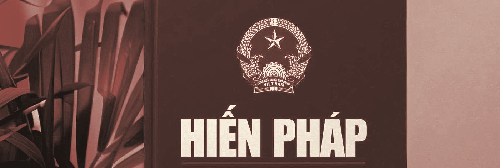
Bản chất nhân dân: Nhà nước của nhân dân, do nhân dân, vì nhân dân; tất cả quyền lực thuộc về nhân dân.
Thượng tôn pháp luật: Tổ chức và hoạt động trên cơ sở Hiến pháp và pháp luật; pháp luật giữ vị trí tối thượng trong điều chỉnh xã hội.
Thống nhất và kiểm soát quyền lực: Quyền lực nhà nước là thống nhất, có sự phân công rõ ràng, phối hợp nhịp nhàng và kiểm soát giữa các cơ quan: lập pháp, hành pháp và tư pháp (khác với mô hình tam quyền phân lập tư sản).
Sự lãnh đạo của Đảng: Đặt dưới sự lãnh đạo của Đảng Cộng sản Việt Nam (Điều 4 Hiến pháp) và chịu sự giám sát của nhân dân theo cơ chế "Dân biết, dân bàn, dân làm, dân kiểm tra".
Đề cao quyền con người: Tôn trọng, bảo đảm và bảo vệ quyền con người, coi con người là chủ thể, là trung tâm của sự phát triển; dân chủ đi đôi với kỷ cương.
Nguyên tắc tổ chức: Hoạt động theo nguyên tắc tập trung dân chủ, kết hợp phân công, phân cấp và bảo đảm chỉ đạo thống nhất của Trung ương.
(Căn cứ theo Giáo trình Chủ nghĩa xã hội khoa học, trang 84–86 & Hiến pháp 2013)
Khác biệt về bản chất:
Nhà nước XHCN là chính quyền của tuyệt đại đa số nhân dân, dựa trên công hữu, xóa bỏ nguồn gốc bóc lột.
Khác biệt về chức năng:
Chuyển trọng tâm từ cưỡng bức, trấn áp sang tổ chức, xây dựng đời sống kinh tế – xã hội mới.
Khác biệt về sứ mệnh lịch sử:
Là kiểu nhà nước tiến bộ nhất và cũng là kiểu nhà nước cuối cùng, chuẩn bị điều kiện để tự tiêu vong trong xã hội tương lai.
Tiền đề kinh tế – xã hội:
Phương thức xác lập:
Đập tan bộ máy nhà nước tư sản qua cách mạng vô sản, xác lập chính quyền của giai cấp công nhân và nhân dân lao động.
Các mốc lịch sử tiêu biểu:
Định nghĩa:
"Nhà nước XHCN là nhà nước mà ở đó, sự thống trị chính trị thuộc về giai cấp công nhân, do cách mạng XHCN sản sinh ra và có sứ mệnh xây dựng thành công CNXH, đưa nhân dân lao động lên địa vị làm chủ trên tất cả các mặt của đời sống xã hội trong một xã hội phát triển cao – xã hội XHCN".
Vì sao V.I. Lênin gọi là "Nhà nước không còn nguyên nghĩa" / "Nửa nhà nước"?
Về đối tượng thống trị: Không còn là công cụ của thiểu số áp bức đa số, mà là sự chuyên chính của tuyệt đại đa số nhân dân đối với thiểu số bóc lột.
Về cơ chế vận hành: Vừa là bộ máy hành chính – cưỡng chế, vừa là tổ chức quản lý kinh tế – xã hội của chính nhân dân lao động.
Về quy luật phát triển: Sứ mệnh của nó là tự tiêu vong khi cơ sở giai cấp không còn trong giai đoạn cộng sản chủ nghĩa hoàn thiện.
Chính trị
Kinh tế
Văn hóa – tư tưởng và xã hội
Mắt xích biện chứng: Dân chủ XHCN & Nhà nước XHCN
NHÀ NƯỚC XHCN – KIỂU NHÀ NƯỚC MỚI
Nhóm 4 – Chủ nghĩa xã hội khoa học
Căn cứ vào phạm vi tác động của quyền lực:
Đối nội: Quản lý kinh tế, duy trì an ninh chính trị, phát triển văn hóa, giáo dục, an sinh xã hội.
Đối ngoại: Bảo vệ độc lập chủ quyền, mở rộng hợp tác hữu nghị quốc tế, hội nhập toàn cầu.
Căn cứ vào lĩnh vực hoạt động:
Chức năng chính trị, kinh tế, văn hóa, xã hội...
Căn cứ vào tính chất quyền lực nhà nước (Cốt lõi nhất):
Chức năng giai cấp (Trấn áp): Trấn áp phần tử phá hoại, bảo vệ thành quả cách mạng.
Chức năng xã hội (Tổ chức & xây dựng): Phát triển sản xuất, nâng cao đời sống nhân dân.
Trọng tâm chức năng: Quan hệ giữa Trấn áp và Tổ chức – Xây dựng
Trấn áp chỉ là phương tiện – tiền đề bảo vệ
Tổ chức, xây dựng là nhiệm vụ căn bản, quyết định nhất
Bản chất nhân dân: Nhà nước của nhân dân, do nhân dân, vì nhân dân; tất cả quyền lực thuộc về nhân dân.
Thượng tôn pháp luật: Tổ chức và hoạt động trên cơ sở Hiến pháp và pháp luật; pháp luật giữ vị trí tối thượng trong điều chỉnh xã hội.
Thống nhất và kiểm soát quyền lực: Quyền lực nhà nước là thống nhất, có sự phân công rõ ràng, phối hợp nhịp nhàng và kiểm soát giữa các cơ quan: lập pháp, hành pháp và tư pháp (khác với mô hình tam quyền phân lập tư sản).
Sự lãnh đạo của Đảng: Đặt dưới sự lãnh đạo của Đảng Cộng sản Việt Nam (Điều 4 Hiến pháp) và chịu sự giám sát của nhân dân theo cơ chế "Dân biết, dân bàn, dân làm, dân kiểm tra".
Đề cao quyền con người: Tôn trọng, bảo đảm và bảo vệ quyền con người, coi con người là chủ thể, là trung tâm của sự phát triển; dân chủ đi đôi với kỷ cương.
Nguyên tắc tổ chức: Hoạt động theo nguyên tắc tập trung dân chủ, kết hợp phân công, phân cấp và bảo đảm chỉ đạo thống nhất của Trung ương.
(Căn cứ theo Giáo trình Chủ nghĩa xã hội khoa học, trang 84–86 & Hiến pháp 2013)
Cảm ơn cô và các bạn đã chú ý lắng nghe!
Mời cô và cả lớp đặt câu hỏi giao lưu, thảo luận.